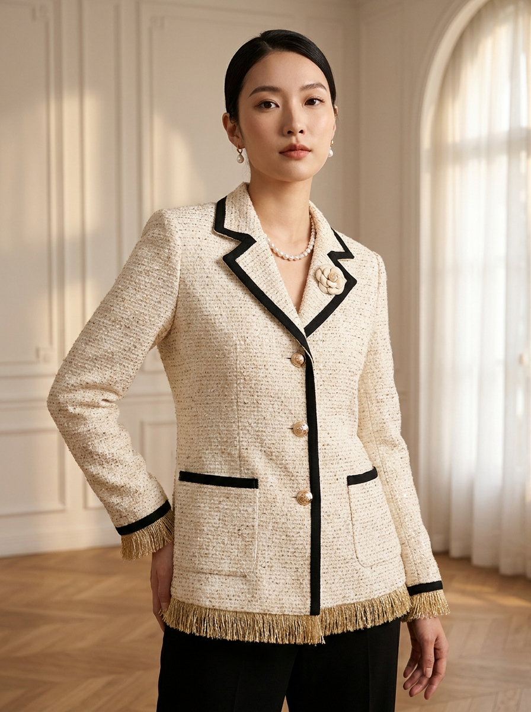
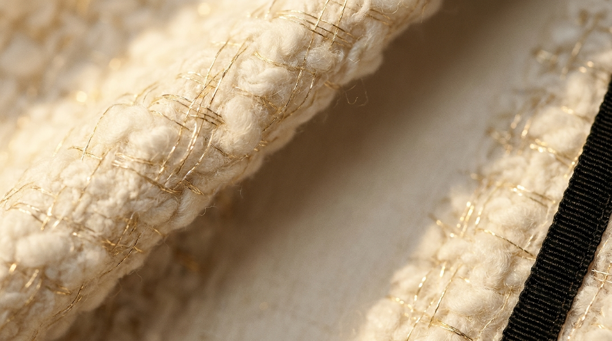
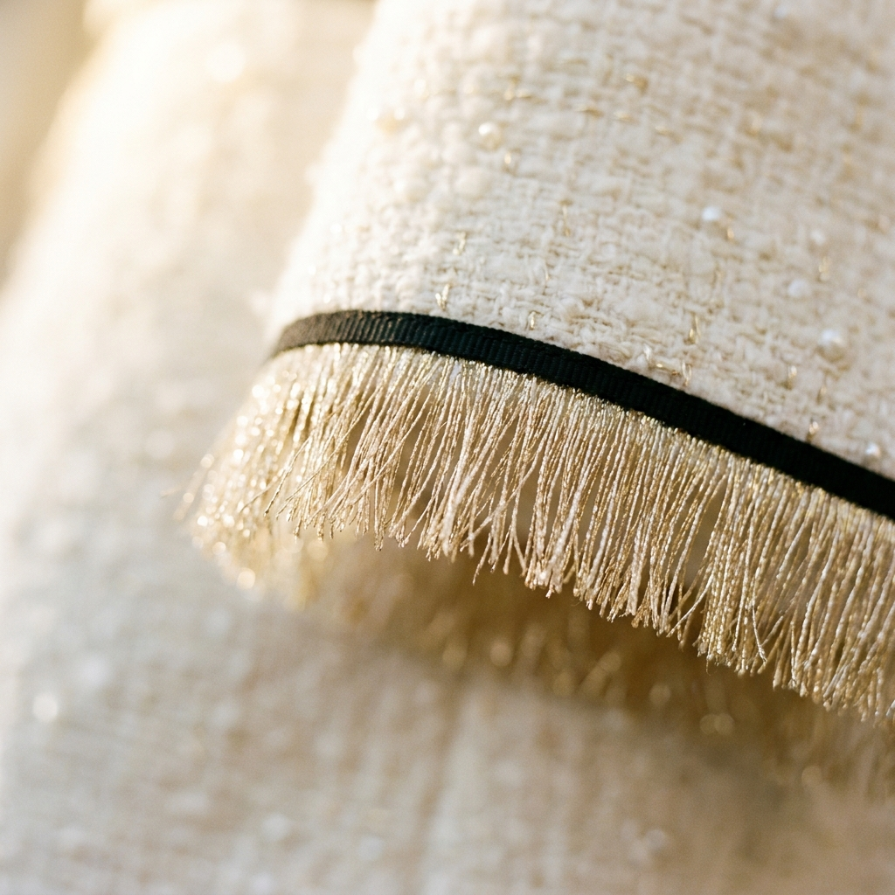
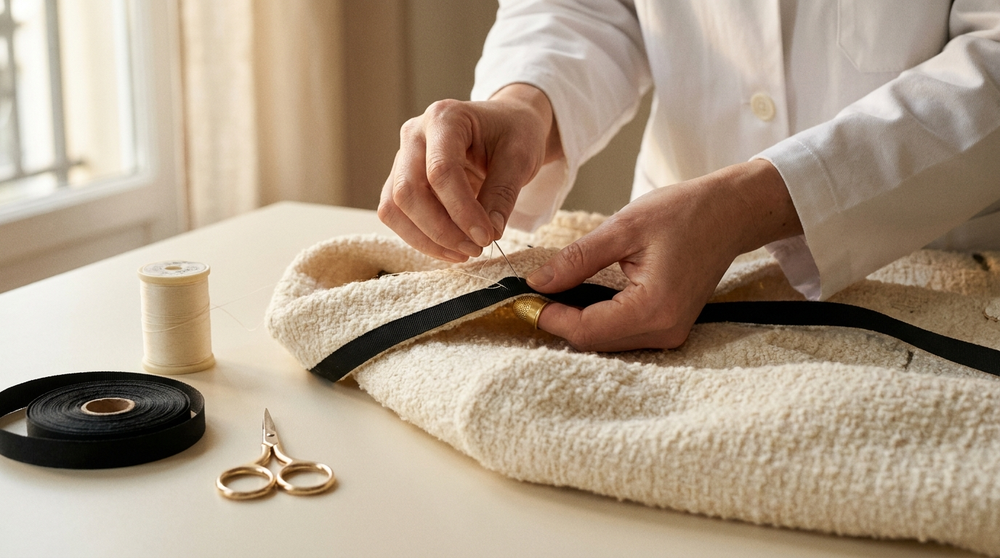
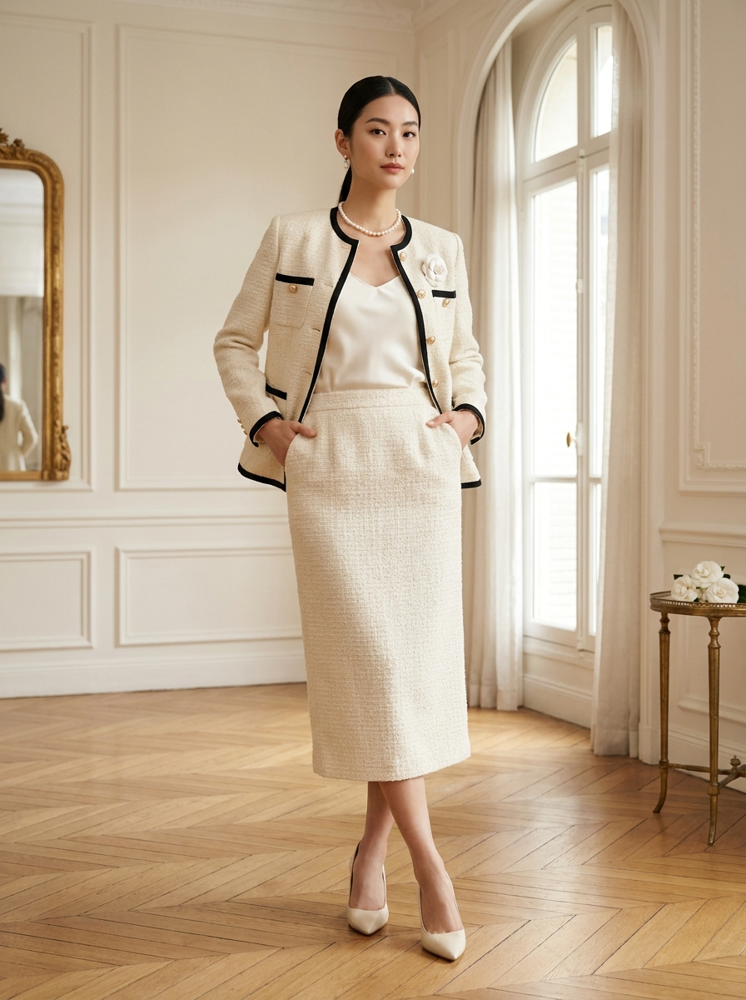
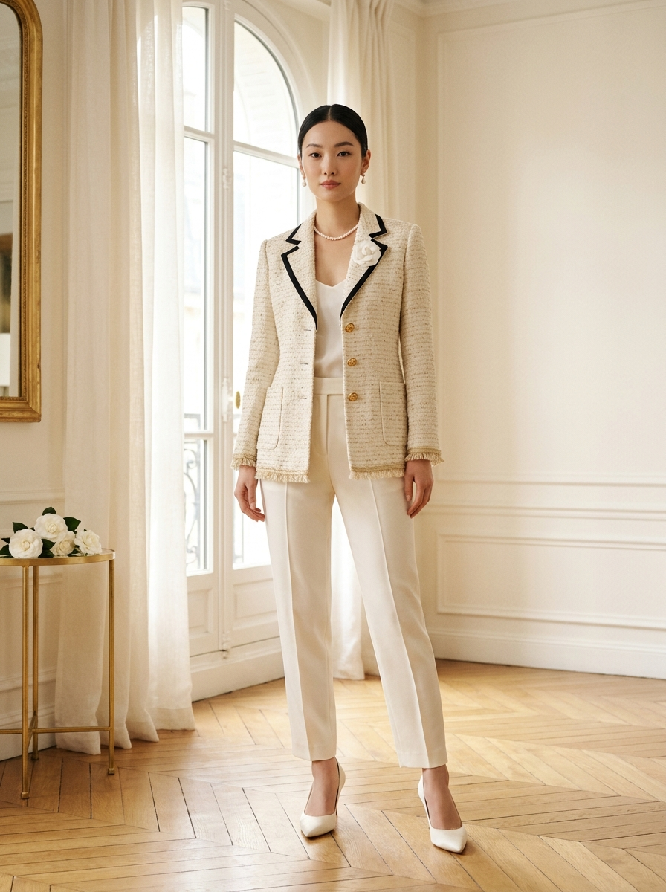

01
Bouton Camélia
Sculpted Champagne Gold Button
샴페인 골드 카멜리아 버튼 — 손으로 새긴 5엽 카멜리아


Les Codes de la Maison
메종이 옷에 새기는 네 가지 표식
01
Sculpted Champagne Gold Button
샴페인 골드 카멜리아 버튼 — 손으로 새긴 5엽 카멜리아

02
Fine Black Grosgrain Trim
블랙 그로그랭 트림 — 라펠·커프·헴을 따라 손바느질

03
Champagne Gold Filament Woven Through
한 가닥의 황금실 — 직조 단계에서 함께 짜내려간 시그니처

04
Subtle Gold Fringe at the Hem
헴 가장자리의 골드 프린지 — SS 시즌의 가벼운 변주

Étape I — La Pose du Bouton
« Un bouton ne se coud pas. Il se pose. »
메종의 카멜리아 버튼은 — 한 장의 트위드 위에서 다섯 번의 핸드 스티치, 그리고 마지막 매듭으로 자리를 잡습니다. 한 점당 세 개의 버튼, 평균 22분의 작업.
Each champagne-gold camellia button is hand-set by an atelier seamstress with five precise stitches of fine gold silk thread, secured with a slip knot hidden in the lining. Three buttons per jacket, ~22 minutes per piece.

Étape II — La Pose du Liseré
« Le grosgrain ne se voit pas. Il se sent. »
라펠과 커프, 헴, 포켓 플랩 — 자켓의 모든 가장자리를 따라 가는 블랙 그로그랭이 슬립 스티치로 자리잡습니다. 한 점당 약 4.2미터의 그로그랭, 약 6시간의 핸드워크.
Fine black grosgrain trim is hand-stitched along every edge — lapel, cuffs, hem, pocket flaps — with invisible cream-cotton slip-stitches. ~4.2 m of grosgrain per piece, ~6 hours of hand-finishing.
Composition
Lining: 100% Soie ivoire (Ivory silk twill, hand-finished).
Soin · Care
Atelier
Hand-finished at the Atelier Rue de Sèvres in Paris's 6e arrondissement, where ALDORE has dressed quiet Parisian women since 1948.
파리 6구 Rue de Sèvres 메종 아틀리에에서 1948년부터 이어진 손작업으로 완성됩니다. 한 점당 평균 38시간, 4명의 시즈더(seamstress)와 1명의 마스터 테일러가 참여합니다.
Comment le Porter
Le Tweed Doré를 입는 두 가지 방식


Continuer la lecture
« 32 looks. 4 chapitres. Un seul fil d'or. »
32개의 룩, 4개의 챕터, 그리고 한 가닥의 황금실
Explore the Full Collection →